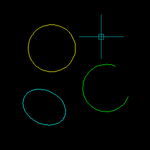

Centerline
This page is delivered for consistency purposes only, as part of the LeeMac sample module of DynALisp, which shows how DynALisp turns existing AutoLISP programs into a module. The program and its description are the work of Lee Mac, who keeps all the credit for them. The original page, with the latest version, is on Lee Mac's website: https://lee-mac.com/centreline.html
| Function Syntax | LM-Centerline – original syntax: CLine (see aliases) |
| Current Version | 1.2 |
| Compatible with AutoCAD for Mac? | Yes |
| Compatible with AutoCAD LT? | Yes |
| Original Page | lee-mac.com/centreline.html |
Program Description
This relatively simple program enables the user to quickly construct a pair of center-lines for an Arc, Circle, Ellipse, or Elliptical Arc object.
Upon issuing the command syntax CLine at the AutoCAD command-line, the user is first prompted to select either an Arc, Circle, Ellipse or Elliptical Arc for which to construct a pair of center-lines. Following a valid selection, the user is then prompted to indicate the length and direction of the center-lines relative to the center of the selected object.
The program will then proceed to construct two orthogonal lines, extending from the center of the selected object to the point specified by the user (in all four directions), and rotated as required. The center-lines will be created on the current layer, with the current settings for colour, linetype & lineweight at the time of running the program.
The program will furthermore perform successfully with circular & elliptical objects constructed in any UCS construction plane.
Demonstration

Bundled program notes
;;--------------------=={ Centerline }==----------------------;;
;; ;;
;; Creates a pair of centerlines for Arcs, Circles, Ellipses ;;
;; and Elliptical arcs with a user-defined length and angle. ;;
;;------------------------------------------------------------;;
;; Author: Lee Mac, Copyright © 2013 - www.lee-mac.com ;;
;;------------------------------------------------------------;;
;; Version 1.2 - 13-08-2013 ;;
;;------------------------------------------------------------;;
Command Names And Aliases
As in every DynALisp module, each program of this sample module has one main command, named LM-*, and the original command names of Lee Mac's page are kept as its aliases: they run the same command, and can be added, renamed or removed in Dyl-Suite (saved in Resources\Aliases.csv).
| Command | Aliases | Name |
|---|---|---|
| LM-Centerline | CLINE | Centerline |